Garden Beds
A working record of the garden's mixed beds — the long side-house foundation line and the layered perennial bed in back — tracked together because they share plants, light, and design decisions.
Planting direction

- keep the rhododendron as the right-side anchor
- keep the Sunshine ligustrum as the yellow/chartreuse accent
- add one purple loropetalum for contrast, not multiple bright shrubs
- use heuchera in grouped drifts along the front and in gaps
- if you want another texture layer, add hosta or astilbe in the shadier sections
- skip loading the middle with too many medium shrubs — the bed is too shallow for that
Another angle with Shaina in the mix

- Shaina maple is visible as the central upright feature
- Sunshine ligustrum still reads bright in the foreground
- loropetalum and other low shrubs are building the edge layer
What's already working
The rhododendron already owns the right side of the bed, and the Sunshine ligustrum gives you one bright accent. The space between them still has room to become more intentional, but the structure is there.

Whole yard coming into focus
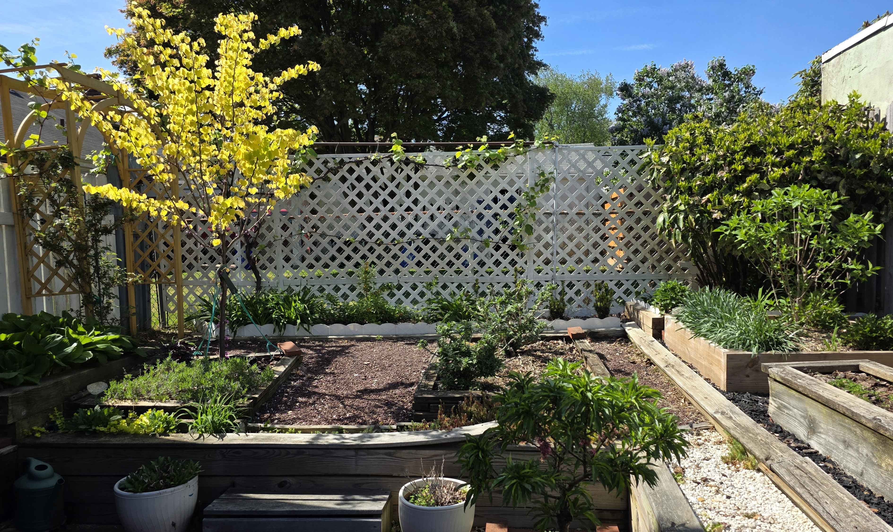
- Rising Sun redbud is dominating the left side with bright gold spring foliage
- grapevine is beginning to climb and soften the white lattice backdrop
- raised beds are clearly separated but still read as one cohesive yard
- rhododendron on the right is holding a strong evergreen mass
Sunshine ligustrum holding the middle
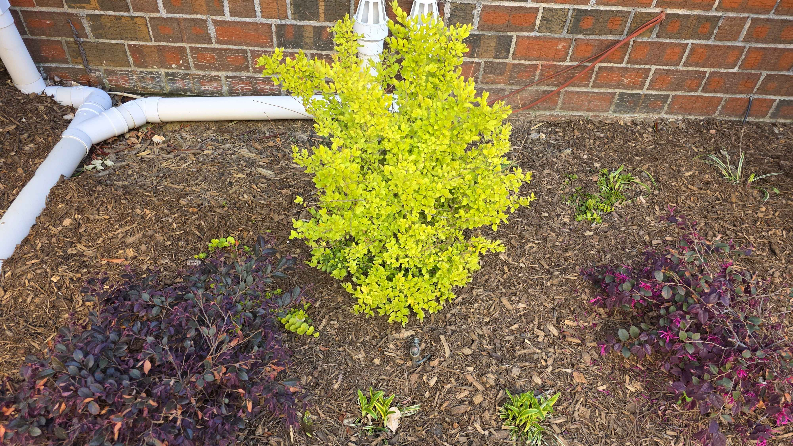
- Sunshine ligustrum is the clear bright focal point in this section of the bed
- purple loropetalums are filling in as the darker low side anchors
- new liriope starts are visible along the front edge
- the color contrast against the brick is already doing a lot of the design work
Rhododendron set for bloom
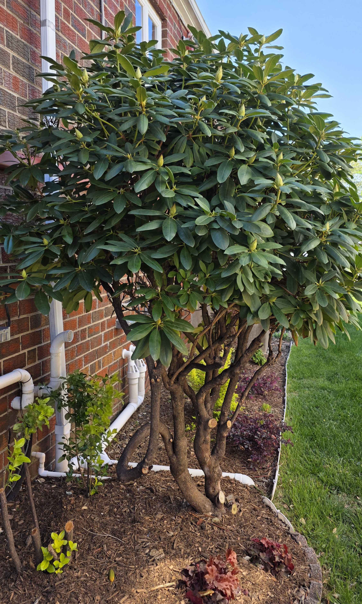
- mature evergreen canopy is holding strong structure along the foundation
- flower buds are clearly formed across the shrub ahead of bloom
- older branching and trunk structure give it a settled, established presence
- the rhododendron is still the dominant anchor on this side of the bed
Rhododendron opening up
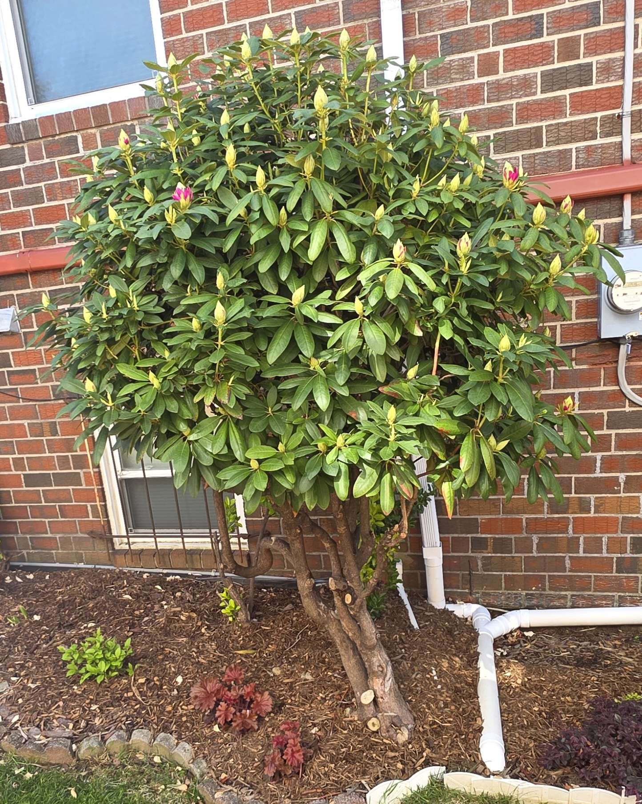
- flower clusters are opening across the mature evergreen canopy
- shrub remains the main right-side anchor of the foundation bed
- older branching and dense foliage still give the plant real weight
- brick backdrop makes the bloom read as a clear seasonal shift
Side-yard bed after a fresh mow
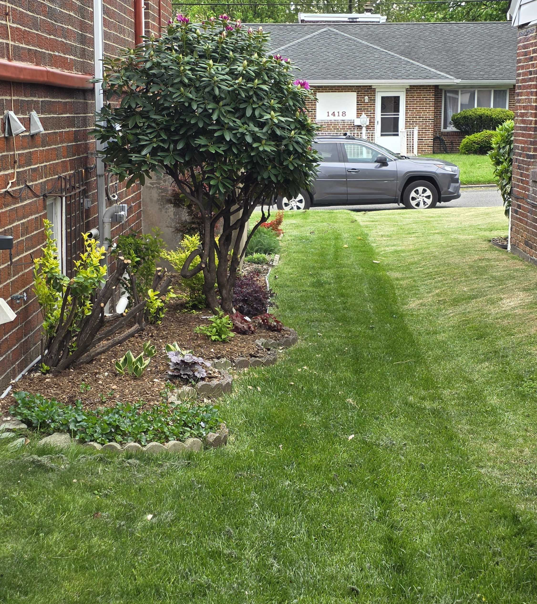
- rhododendron bloom is visible above the foundation bed
- hostas, heuchera, and low edging plants are filling the front and middle layers
- the mown lawn path gives the bed a cleaner finished edge
- the whole side-yard view now reads as one continuous garden-bed section
Rhododendron canopy over the edge planting
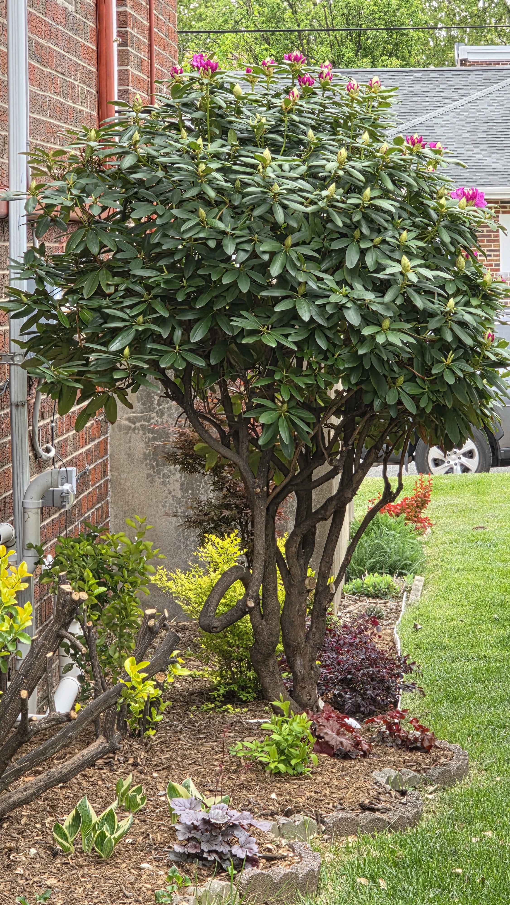
- rhododendron flowers are opening across the upper canopy with more buds still coming
- older trunks give the bed strong vertical structure
- hostas, heuchera, chartreuse shrub growth, and burgundy foliage are filling the front edge
- the close view shows the foundation bed becoming a layered spring planting, not just one large shrub
Rhododendron at full volume
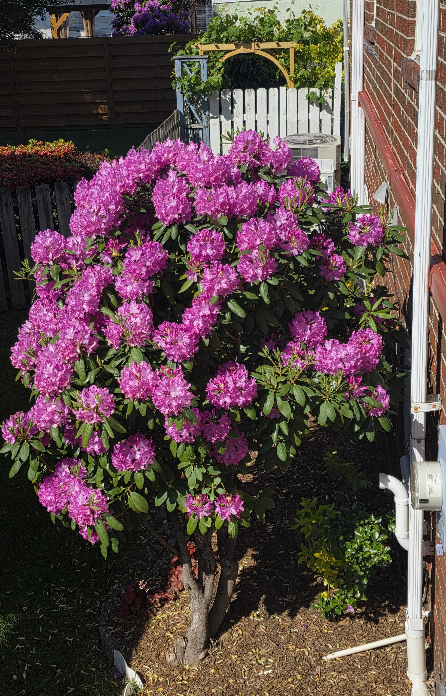
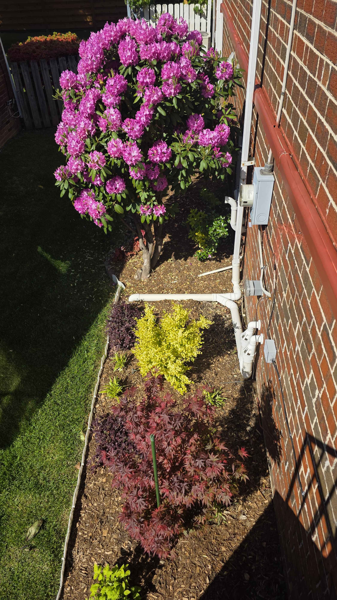
- rhododendron is in peak bright pink bloom with flower clusters covering the canopy
- Shaina Japanese maple gives the foreground a deep red, finely cut texture
- Sunshine ligustrum is glowing chartreuse in the middle of the bed
- young liriope and low edge plants are beginning to mark the front line
- the full bed now reads as a layered foundation planting rather than separate shrubs
Side-house bed starting to read as one line
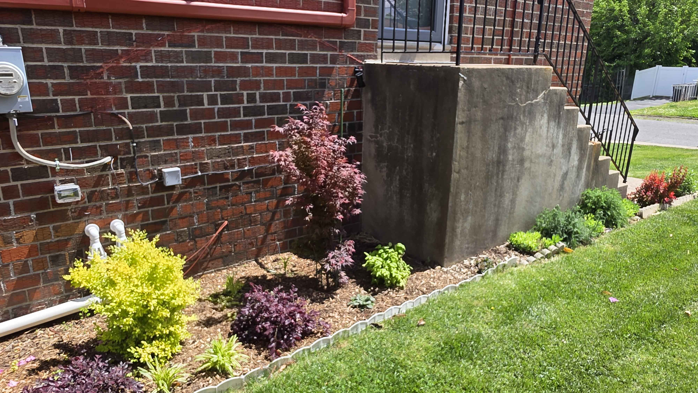
- Shaina Japanese maple is the vertical feature against the brick and stair wall
- Sunshine ligustrum is holding the bright foreground corner
- purple loropetalum and low edging plants are building the front rhythm
- the far end of the bed is also filling, so the whole side line feels more continuous
Sunshine ligustrum at full glow
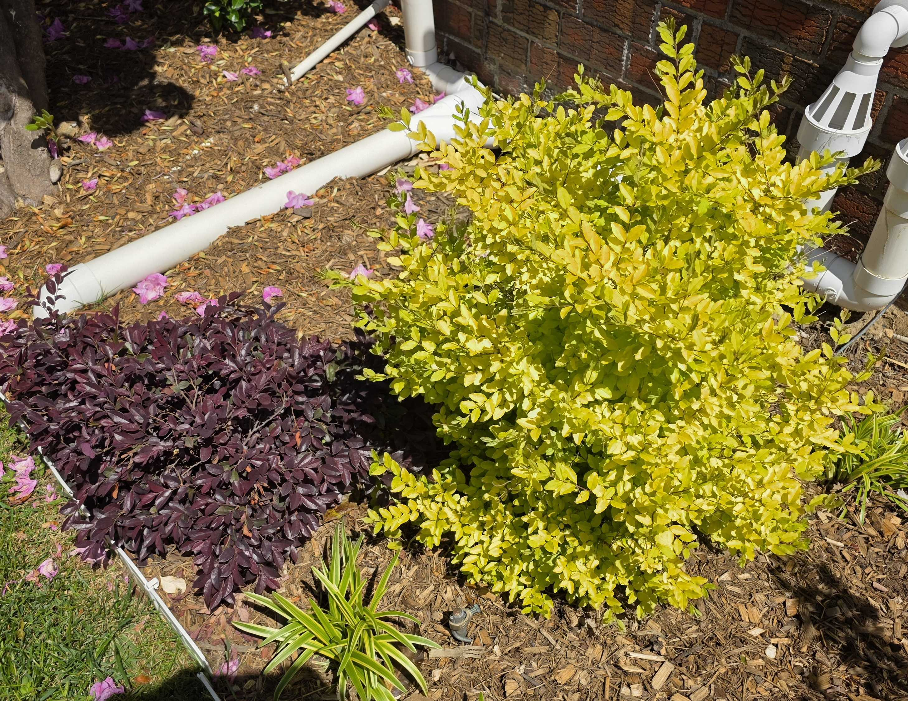
- Sunshine ligustrum is dense, bright, and holding its rounded form
- loropetalum provides a strong dark contrast beside it
- fallen rhododendron petals show the bed moving past peak bloom
- young liriope is beginning to repeat along the front edge
Pugster bed filling in
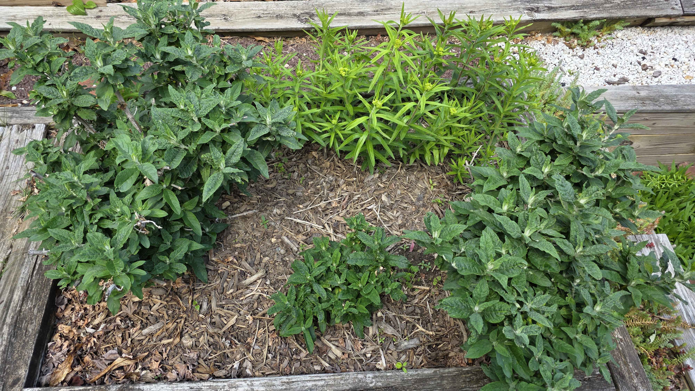
- Pugster butterfly bushes have filled out strongly from their spring cut-back
- upright perennial growth through the back is adding height and fine texture
- the center still has some open mulch, which gives the new growth room to expand
- the raised timber frame keeps the bed visually tidy even while it fills in
Purple bloom close-up
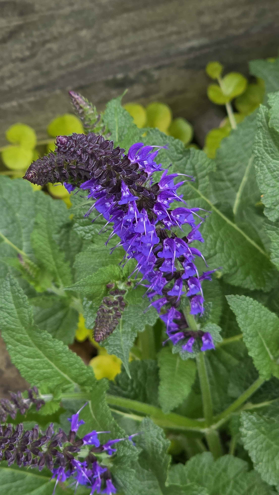
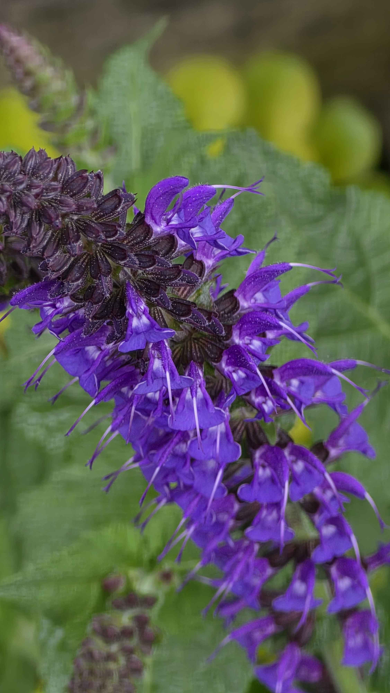
- two close-up views show the salvia flowers opening along dark purple spikes
- fine water droplets are visible on the petals and buds
- golden creeping Jenny gives the background a bright chartreuse glow
- the tighter framing works as a detail companion to the wider mixed-bed view
Salvia starts the purple run
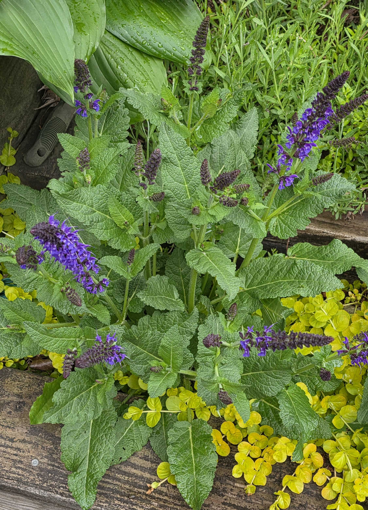
- salvia is in active bloom with multiple purple flower spikes open and more still forming
- the foliage looks full, clean, and rain-fresh
- large hosta leaves behind it add a broad, shaded texture layer
- golden creeping Jenny is filling the timber edge with bright chartreuse contrast
Orange Rocket barberry in the backyard bed

- Orange Rocket barberry is the upright focal point
- salvia and heuchera soften the front edge
- holly gives the bed a stronger evergreen anchor
Spring in waves
- ornamental onions are the dominant front layer
- astilbe is emerging behind them
- hydrangea is leafing out in the center
- daylilies are just beginning at the edges
Hydrangea waking up beside the gold dust
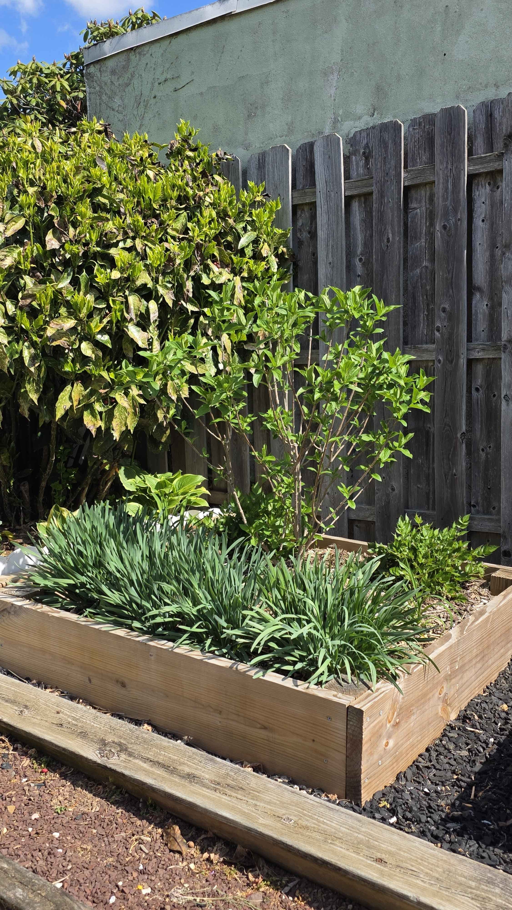
- hydrangea is leafing out cleanly through the center of the bed
- gold dust aucuba provides the larger evergreen anchor on the left
- allium foliage is creating a strong low front edge
- the raised-bed frame makes the layering read especially clearly
Bobo, heuchera, salvia holding the box
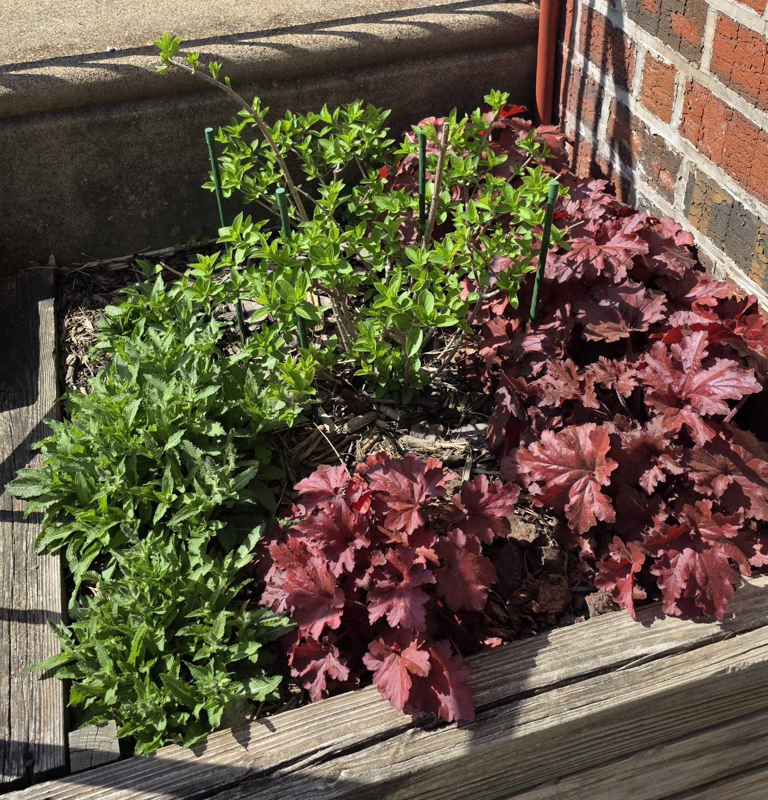
- Bobo hydrangea is leafing out with compact, even spring growth
- heuchera is providing the dominant burgundy color block
- salvia is pushing healthy green growth along the front edge
- the box reads as a clean three-part composition already
Gold dust carrying berries and shade
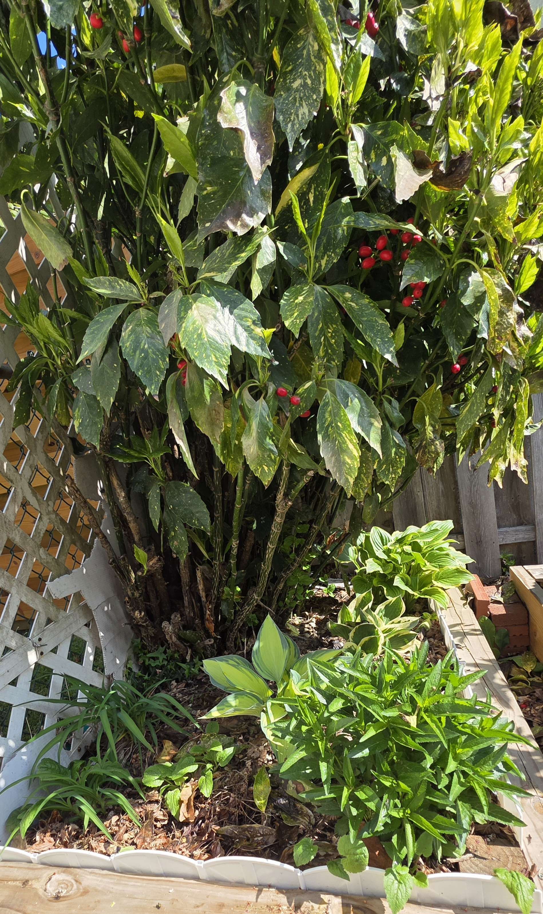
- Gold Dust aucuba is still holding bright red berries
- hostas underneath are pushing clean fresh growth
- the lattice corner is reading as a true shaded garden pocket
- older woody structure gives the planting a mature, established feel
Limelight Prime taking the center
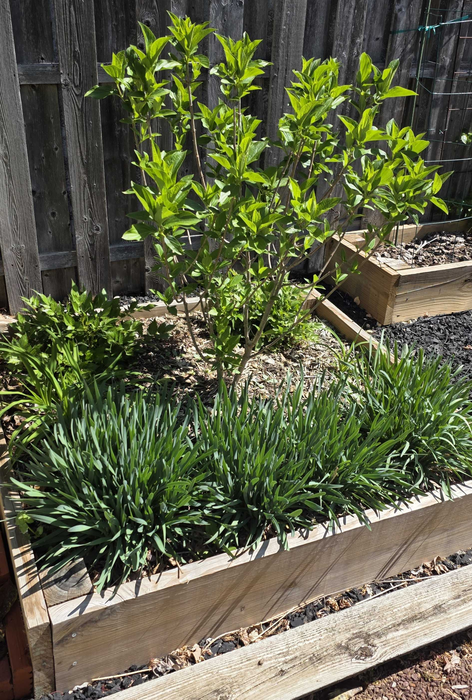
- Limelight Prime hydrangea is now the clear central anchor of the bed
- ornamental onions still make the strongest front-edge mass
- astilbe is emerging behind them with fresh spring growth
- the raised-bed composition is starting to read as a full layered planting
Aucuba over the spring bed
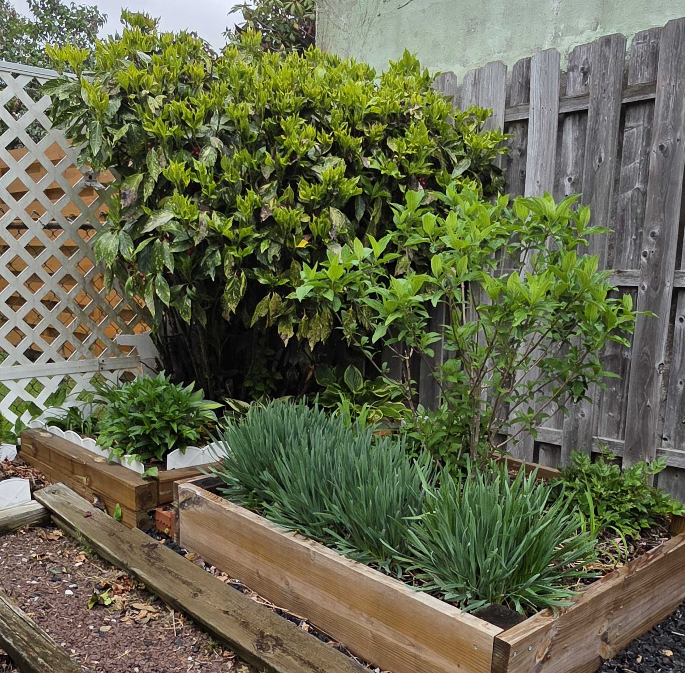
- Gold Dust aucuba is pushing a bright fresh flush above older speckled foliage
- ornamental onions form the dense blue-green front layer
- hydrangea stems are leafing out behind the allium foliage
- lattice, wood fence, and the raised-bed frame make the corner read as a layered pocket
First layer first
This bed reads in stages right now. The ornamental onions are carrying the front, the astilbe is pushing behind them, and the hydrangea is just beginning to leaf out in the center while the daylilies are only barely arriving at the edges.